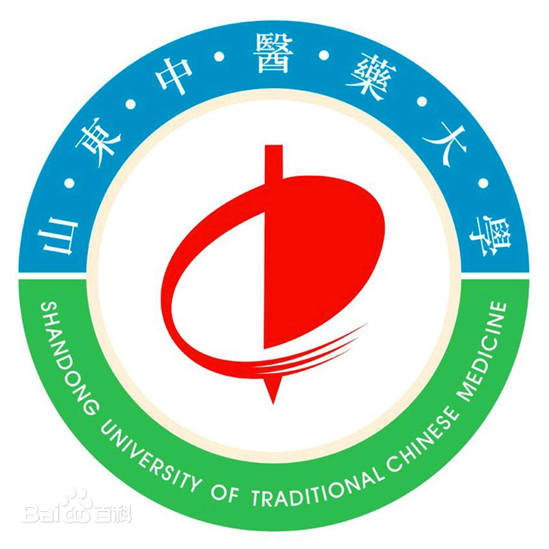

硕士研究生,共青团员 |
我目前在山东中医药大学青岛中医药科学院攻读硕士学位,导师是孙兆才副教授。本人于2023年6月在青岛农业大学海都学院大数据学院获得了计算机科学与技术专业的学士学位。
我的研究方向主要包括：人工智能、计算机视觉等。
|  | 硕士 山东中医药大学 (2023.9 ~ 至今)
|
本科 青岛农业大学海都学院 (2019.9 ~ 2023.7)
|
实习地点: 济南博赛网络科技 | 2022.7-2022.8
实习岗位: 大数据实习生
主要技术栈: Hadoop,Hive,java,python,linux等
[论文发表的地方] 题目
尚文琦
计算机学报, 2020, 43(7), 1199 – 1214. (EI期刊 / CCF中文A类期刊 ) [PDF]
已授权的国家专利 (2016-2023) 总计68件：
包括发明专利5件(导师第一发明人)；转让发明专利1件(一种采用圆柱凸轮机构的三极管引脚折弯机，本人第三发明人)；实用新型专利17件(本人第一发明人)。 [23件专利清单]
[23件专利首页]
复杂场景下的高效鲁棒模型拟合方法研究 (厦门市面上项目，2023 - 2026)，主持
大学英语四级(CET-4)
教师资格证